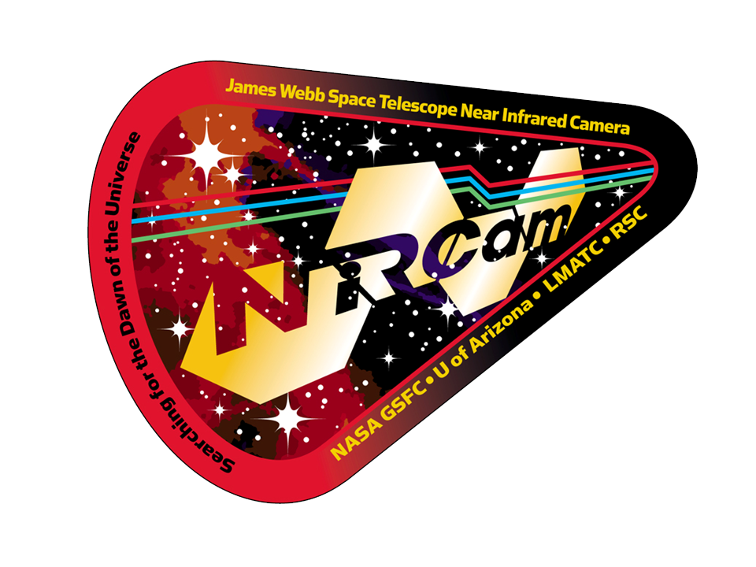

Welcome to
PyNMC

Welcome to
PyNMC
| PYNRC_PATH: |
|
| PYSYN_CDBS: |
|
| WEBBPSF_DATA: |
|
| Optical FILTER you want to convert from: | |
| Spectral Type: | |
| Source (Star) Magnitude: | |
| Photometric System: |
| NIRCam FILTER you want to convert to: | |
| Photometric System: |